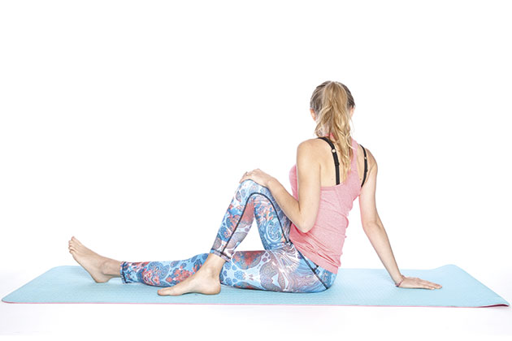
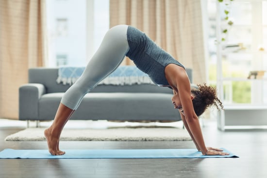
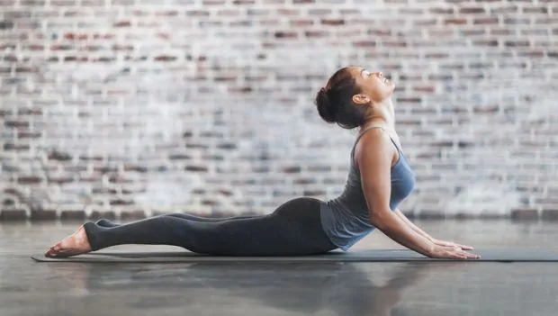

Flexibility Exercise
Flexibility exercise is one of the four types of exercise along with strength, balance and endurance. Ideally, all four types of exercise would be included in a healthy workout routine and AHA provides easy-to-follow guidelines for endurance and strength-training in its Recommendations for Physical Activity in Adults.
They don’t all need to be done every day, but variety helps keep the body fit and healthy, and makes exercise interesting. You can do a variety of exercises to keep your physical activity routine exciting. Many different types of exercises can improve strength, endurance, flexibility, and balance. For example, practicing yoga can improve your balance, strength, and flexibility. A lot of lower-body strength-training exercises also will improve your balance.
Flexibility exercises stretch your muscles and can help your body stay flexible. These exercises may not improve your endurance or strength, but being flexible gives you more freedom of movement for other exercise as well as for your everyday activities. It may also help you avoid discomfort when confined in a space for a long period of time (like a long meeting or a plane flight).
-

When should I stretch?
The best time to do flexibility exercises is when your muscles are already warm so they can stretch farther without tightness or pain. If you’re doing only stretching exercises, warm up with a few minutes of easy walking first to warm up your muscles. If you’re doing endurance or strength exercises, stretch after, not before. You move into a position that lengthens a target muscle and hold the position for 15-60 seconds.
-

How much do I need?
Always stretch slowly and smoothly into the desired position, as far as is comfortable for you without pain. Always stretch slowly and smoothly into the desired position, as far as is comfortable for you without pain. Do what is comfortable for you. If you’re not used to stretching, hold the stretch for about 10 seconds. The more often you stretch, the easier it will become. Eventually, you will be able to hold each stretch for 30 seconds comfortably.
-

Examples of flexibility exercises:
Stretches
Forward bend – reach your chest toward your toes while standing or seated
Yoga
Pilates
Static Stretching: It's best to remember to breathe as you hold each stretch.
Dynamic Stretching: You move in and out of a position that lengthens a target muscle. Dynamic stretching involves moving through a joint's full range of motion either slowly or quickly to mimic a functional activity.
Tips for safe stretching:
Relax and breathe normally while stretching. Then stretch while pushing the breath slowly out your mouth. Count to 10 slowly or time yourself for 10-30 seconds. Breathe normally during the stretch.
A stretch should always be smooth and slow, never jerky or bouncy. This can cause muscles to tighten and may result in injuries.
Hold the stretch for 10-30 seconds and repeat each stretch 3-5 times. Remember to breathe normally during each stretch.
As you become more flexible, try reaching farther in each exercise. A mild pulling feeling during a stretch is normal. Sharp or stabbing pain or joint pain means you should stop, you're stretching too far.
Always keep your joints slightly bent, never “locked” in a straight position. This can cause injury.
A Word From Verywell!
Exercisers who include flexibility training as part of a balanced fitness program enjoy many benefits. Stretching exercises can help to decrease stress and improve the way your body moves and feels throughout the day. Improved flexibility can even lead to better posture.
All of these benefits help you to move more often throughout the day and burn more calories. So if you're trying to lose weight, it's smart to include flexibility exercises in your weight loss program.
What if I’m recovering from a cardiac event or stroke?
Some people are afraid to exercise after a heart attack. But regular physical activity can help reduce your chances of having another heart attack.
The AHA published a statement in 2014 that doctors should prescribe exercise to stroke patients since there is strong evidence that physical activity and exercise after stroke can improve cardiovascular fitness, walking ability and upper arm strength.